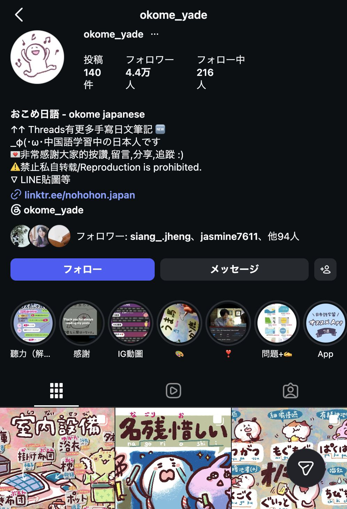
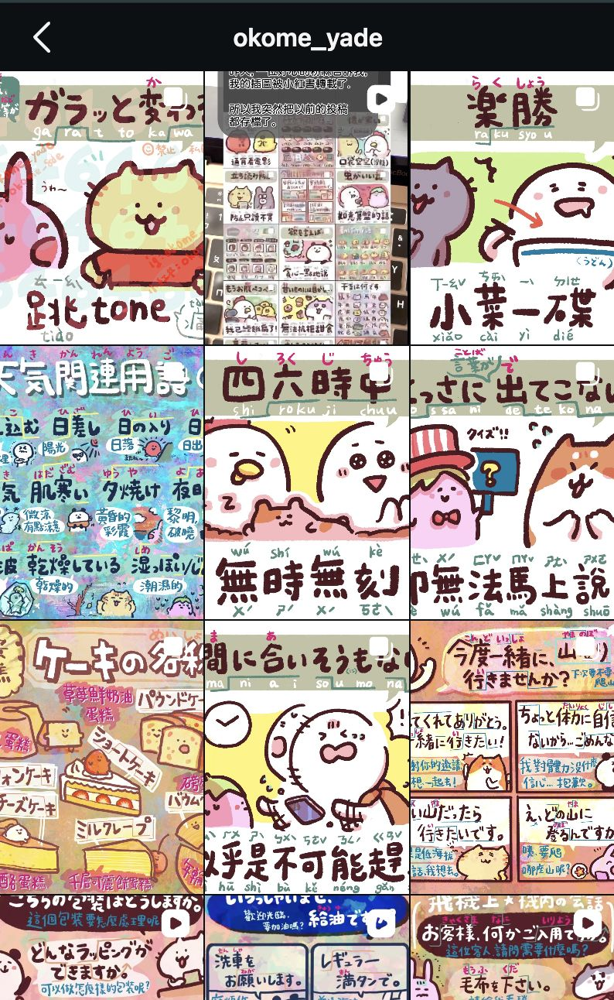
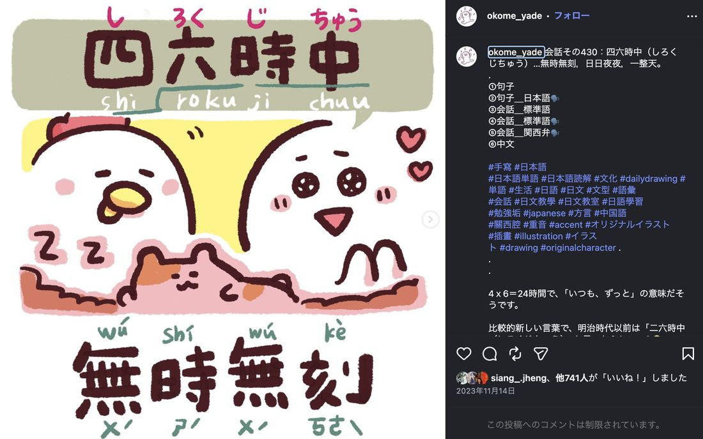
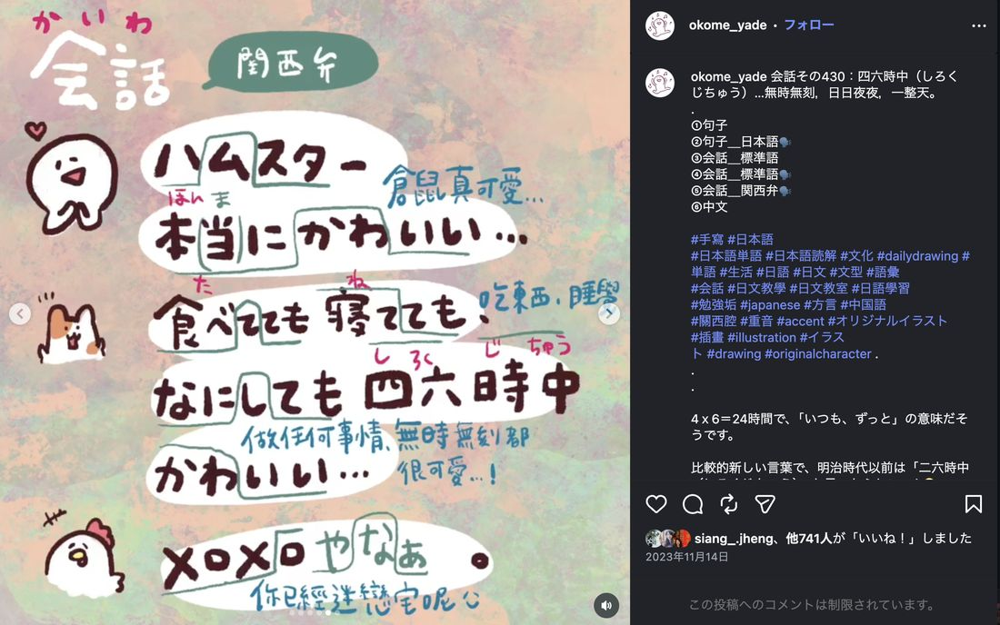

okome_yadeInstagram
View Instagram →企画 / イラスト / 翻訳 / 音声収録 / 投稿運用
- 約44,000followers
- 1,000+posts created
- 約140posts published now
- 台湾・中国語圏の日本語学習者に向けて、日本語表現をイラストで紹介するInstagramアカウントを運営。
- 教材で見つけた表現をもとに、例文、標準語・関西弁の音声、会話形式の投稿へ展開。
- 約3年間、企画から投稿・コメント対応・次回改善まで一連の運用を継続。
主要讀者為中文圈的日文學習者，目前約有4.4萬名追蹤者。